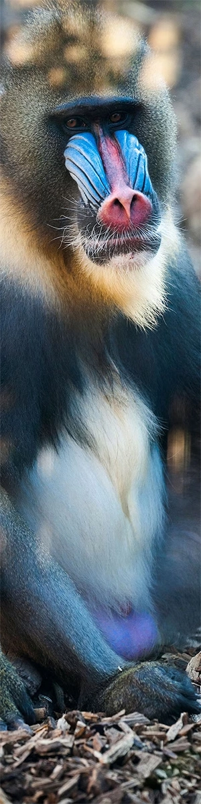
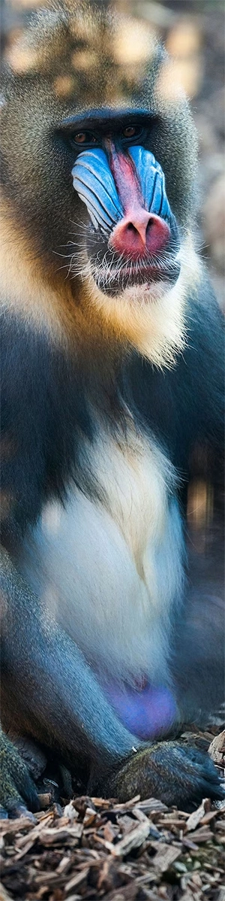

During the months of March to July, the cooler Benguela Current moves up towards the east coast of South Africa, resulting in the migration of millions of sardines. This natural phenomenon provides an abundant food source, attracting dolphins, whales, seals, penguins, sharks, game fish, birds and people that come from all over the world to spend time interacting with these animals while they chase the biggest shoal on earth.
The Sardine Run action starts in Port Elizabeth in March and by the end of June, the sardines reach Port St Johns, which is situated in the heart of the Wild Coast, a 250km coastline which offers spectacular scenery and unique beauty to the Sardine Run experience.
Cthulhu Divers has built the best Sardine Run experience - putting together the best crews, boats and accommodations to create an exhilarating adventure for anyone choosing to experience the ocean's greatest event of the year.
You are currently viewing the Sardine Run Safari brochure.
The Cthulhu Divers Advantage
With over 20 years of Sardine Run experience, combined with local knowledge of the area and animals, Cthulhu Divers provides you with the highest probability of encountering the densest displays of the Sardine Run action where you can see penguins, seals, dolphins, whales, sharks as well as birds on the bait balls.
State-Of-The-Art Boats
Cthulhu Divers' boats are modern and include state-of-the-art modifications specifically with the Sardine Run in mind. A specially designed camera tray that is positioned down the centre of the boat, additional fuel tanks that enable our boats to reach 100 miles and an aft seating arrangement, ensures more space with fewer people on pontoons and excellent agility, reach and speed.
Best Equipment
Cthulhu Divers has teamed up with some of South Africa's top dive guides. You will be provided with the latest and greatest in new or well-maintained equipment, 12ℓ steel tanks and boats that are equipped with ladders for easy boat access. These are benefits that few other Sardine Run operators have.
Seasoned Skippers
Our crew are PADI Certified and seasoned Sardine Run specialists. They have worked with the animals for over 20 years and their intuition and local knowledge guarantees the best Sardine Run experience. They have two goals in mind, your safety and making your Sardine Run experience the most memorable expedition of your life.
Superior Comfort
We aim to make sure that you are absolutely comfortable for 24 hours of the day. We think further than your comfort on the boat – we ensure that there is ample space when you are travelling in the shuttle to game reserves, lodgings and attractions and that you are accommodated at superior lodging. A major highlight, is providing you with a dry wetsuit every morning.
Snorkellers And Non-Divers
Most of the Sardine Run is experienced snorkelling and only when we find a static bait ball do we get in the water with scuba gear to view the bait balls from below. This is excellent news for people who are not qualified divers but are able to snorkel. The Sardine Run is an exceptional experience above and below the water. Think of it as a game drive safari, but in the ocean.
Location: Port Elizabeth / Gqeberha
Port Elizabeth, recently renamed Gqeberha (try say that 10 times fast), is known as South Africa's “friendly city” and is home to the best Sardine Run sightings in late March through the month of April.
With a large array of excellent dive sites, Port Elizabeth's diving is scharacterised by colourful soft corals and a remarkable concentration and diversity of marine species including, whales, dolphins, seals and the largest breeding colony of African Jackass Penguins and Cape Gannets in the world.
Port Elizabeth is also the gateway to South Africa's renowned Garden Route and has a collection of Big 5 Game Reserves, beautiful beaches, restaurants, shopping centres and loads more to enjoy on days off to complete your South African experience.
Adventure Accomodation
On the Sardine Run Ocean Adventure, you'll be staying on the Port Elizabeth beach front, near both the dive shop and the centre of the city's bustling night life. From here you will have access to PE's top restaurants and have easy access to the Kings Beach.
Safari Accomodation
The Sardine Run Safari will have your overlooking a watering hole in a game park which is home to the Big Five animals, namely; Black Rhino, Lion, Leopard, Buffalo and Elephant. Aside from the Big Five there are 13 species of antelope including Eland, Kudu, Red Hartebeest and 22 species of carnivore; including Cheetah, Hyaena and Wild Dog.
Schedule
Keeping in line with Cthulhu Diver's effort in offering bespoke tours centred around our clients requirements, we invite you to get in touch with us with your proposed dates so we can build a custom schedule specifically for you.
It is worth noting that not all “sanctuaries” in South Africa are created equal and that there are sadly quite a few with controversial practices. Cthulhu Divers will work with you to make sure you get the full African experience whilst avoiding these dubious locations. All our activities are eco-friendly and are involved in making contributions to nature conservation.
A typical schedule includes but is not limited to the following:
- Sardine Run Scuba Diving
- Sardine Run Freediving
- Daily Shuttle Safaris
- Two Open Top Safaris
- A Horseback Safari
- Walk with Elephants
- Highest Bridge Bungee
- Primate Sanctuary Visit
- Wild Cat Sanctuary Visit
- Birds Eden Sanctuary Visit
- Seabird Sanctuary Visit
- An Evening of fine dining at Ginger
- Traditional African Dining
- A Shopping Trip
Bookings
As each Sardine Run tour is custom built for you, our recommendation is that you reach out to us on either our contact page or via email: info@cthulhudivers.com. We are also always happy to answer any questions regarding your African escapade by phone: +52 998 303 1727
 
